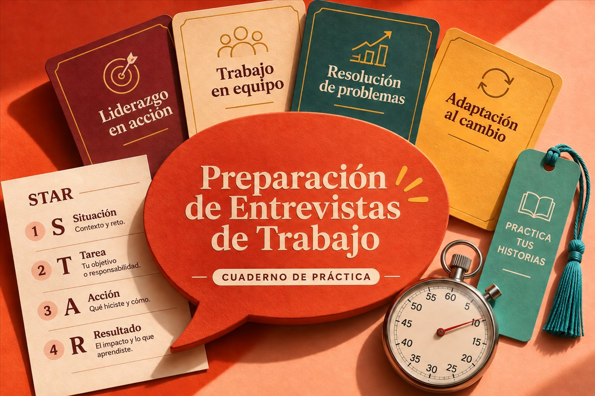

Entrevista exprés
Ordena lo que sabes hacer antes de entrar a la entrevista.
Lo que te llevas
- Cuaderno de historias STAR y logros
- Banco de preguntas y práctica cronometrada
- Seguimiento de postulaciones en CSV
Acceso a la descarga gestionado por Gumroad tras el pago.
Contenido en español e inglésEl importe final y los impuestos aplicables se muestran en Gumroad antes de confirmar la compra.
Para qué te sirve
Llega con ejemplos propios, no con un discurso memorizado. El cuaderno te ayuda a separar el contexto, tu intervención y el resultado de cada historia para practicar cómo explicarla.
Entrega y formatos
ZIP: cuaderno HTML sin conexión, guías ES/EN, plantillas y ejemplos CSV para registrar postulaciones. Permite guardar manualmente una copia local de tus respuestas y abrir una vista de impresión.
Antes de abrirlo
Navegador moderno. Los CSV se abren en Excel, LibreOffice o Google Sheets. No incluye revisión humana ni promesa de contratación.
Lo que debes tener claro
No reescribe tu CV ni redacta una carta de presentación. No inventa experiencia ni garantiza una contratación: tú aportas los hechos y practicas tus respuestas.
Licencia y uso permitido
Puedes usar, modificar e imprimir el cuaderno para ti o para el trabajo interno de tu propio negocio, y compartir resultados completados con sus destinatarios. No permite publicar, redistribuir ni revender el kit, sus plantillas vacías o sus fuentes. Conserva el aviso de licencia en las copias internas.
Cómo funciona
- Revisa la muestra
Abre el ejemplo gratuito, lee el contenido y confirma que tienes las herramientas necesarias.
- Elige tu recurso
El botón de compra te lleva al checkout oficial de CyberSerch en Gumroad. Ahí revisas el importe final y pagas.
- Descarga desde tu recibo
Gumroad proporciona el acceso a los archivos de los productos publicados. Conserva el recibo y comienza por el archivo README incluido.
El importe final y los impuestos aplicables se muestran en Gumroad antes de confirmar la compra.
Antes de elegir
¿Qué recibo y cómo se entrega?
Un archivo descargable con el contenido indicado en la ficha, no un servicio por encargo. Cuando la venta está activa, Gumroad gestiona el pago y el acceso desde el recibo. Si el botón dice “Explorar muestra”, todavía no estás comprando.
¿Tengo que subir mis documentos?
Las muestras de esta tienda no piden tus documentos. Los cuadernos descargables funcionan localmente; lee los requisitos de cada kit. Al salir hacia Gumroad, se aplican sus condiciones y su aviso de privacidad.
¿Y si tengo una duda sobre mi archivo?
Conserva el recibo de Gumroad y usa el canal de contacto del vendedor que aparece allí. Incluye el producto, tu sistema y el paso que falla, sin contraseñas ni documentos personales. Cada kit indica su alcance de soporte; no incluye trabajo personalizado.
¿Puedo adaptar los archivos?
Depende del recurso. Cada ficha resume su licencia: los cuadernos son para uso personal o interno de tu negocio; los kits de IA y SOC usan MIT; las plantillas web permiten sitios propios y para clientes. Consulta el resumen de la ficha y la licencia completa incluida: los permisos de un kit no se extienden a los demás.